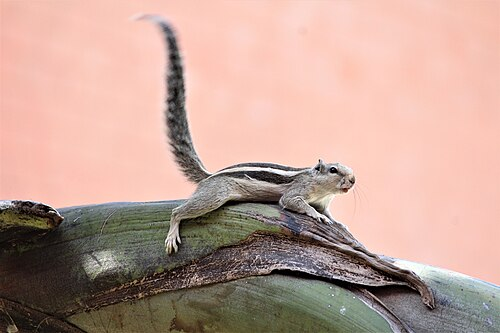

Squirrels are members of the family Sciuridae, a family that includes small or medium-sized rodents. The squirrel family includes tree squirrels, ground squirrels (including chipmunks and prairie dogs, among others), and flying squirrels. Squirrels are indigenous to the Americas, Eurasia, and Africa, and were introduced by humans to Australia. The earliest known fossilized squirrels date from the Eocene epoch, and among other living rodent families, the squirrels are most closely related to the mountain beaver and dormice. [1]

The word squirrel, first attested in 1327, comes from the Anglo-Norman esquirel which is from the Old French escurel, the reflex of a Latin word sciurus, which was taken from the Ancient Greek word σκίουρος (skiouros; from σκία-ουρος) 'shadow-tailed', referring to the long bushy tail which many of its members have. Sciurus is also the name of one of its genuses.
The native Old English word for the squirrel, ācweorna, only survived into Middle English (as aquerne) before being replaced. The Old English word is of Common Germanic origin, cognates of which are still used in other Germanic languages, including the German Eichhörnchen (diminutive of Eichhorn, which is not as frequently used); the Norwegian ikorn/ekorn; the Dutch eekhoorn; the Swedish ekorre and the Danish egern.
A group of squirrels is called a "dray" or a "scurry". [1]
Squirrels are generally small animals, ranging in size from the African pygmy squirrel and least pygmy squirrel at 10–14 cm (3.9–5.5 in) in total length and just 12–26 g (0.42–0.92 oz) in weight, to the Bhutan giant flying squirrel at up to 1.27 m (4 ft 2 in) in total length, and several marmot species, which can weigh 8 kg (18 lb) or more. Squirrels typically have slender bodies with very long very bushy tails and large eyes. In general, their fur is soft and silky, though much thicker in some species than others. The coat color of squirrels is highly variable between—and often even within—species. [1]
Reaching out for food on a garden bird feeder, this squirrel can rotate its hind feet, allowing it to descend a tree headfirst.
In most squirrel species, the hind limbs are longer than the forelimbs, while all species have either four or five toes on each foot. The feet, which include an often poorly developed thumb, have soft pads on the undersides and versatile, sturdy claws for grasping and climbing. Tree squirrels, unlike most mammals, can descend a tree headfirst. They do so by rotating their ankles 180 degrees, enabling the hind feet to point backward and thus grip the tree bark from the opposite direction. [1]
As their large eyes indicate, squirrels have excellent vision, which is especially important for the tree-dwelling species. Many also have a good sense of touch, with vibrissae on their limbs as well as their heads.
Skull of an Oriental giant squirrel (genus Ratufa)—note the classic sciuromorphous shape of the anterior zygomatic region.
The teeth of sciurids follow the typical rodent pattern, with large incisors (for gnawing) that grow throughout life, and cheek teeth (for grinding) that are set back behind a wide gap, or diastema. The typical dental formula for sciurids is 1.0.1.3/1.0.1.3 [1].
The purposes of squirrels' tails include keeping rain, wind, or cold off itself; cooling off when hot by pumping more blood through the tail; providing counterbalance when jumping among trees; acting as a parachute during jumps; and serving as a signaling mechanism.
The hairs from squirrel tails are prized in fly fishing when tying fishing flies. When the squirrel sits upright, its tail folded up its back may stop predators looking from behind from seeing the characteristic shape of a small mammal.
Squirrels live in almost every habitat, from tropical rainforest to semiarid desert, avoiding only the high polar regions and the driest of deserts. They are predominantly herbivorous, subsisting on seeds and nuts, but many will eat insects and even small vertebrates.
Squirrel in sunlight
Squirrel in Chandigarh
Many juvenile squirrels die in the first year of life. Adult squirrels can have a lifespan of 5 to 10 years in the wild. Some can survive 10 to 20 years in captivity. Premature death may occur when a nest falls from the tree, in which case the mother may abandon her young if their body temperature is not correct. Many such baby squirrels have been rescued and fostered by a professional wildlife rehabilitator until they could be safely returned to the wild, although the density of squirrel populations in many places and the constant care required by premature squirrels means that few rehabilitators are willing to spend their time doing this and such animals are routinely euthanized instead. [1]
Reaching out for food on a garden bird feeder, this squirrel can rotate its hind feet, allowing it to descend a tree headfirst.
Squirrels mate either once or twice a year and, following a gestation period of three to six weeks, give birth to a number of offspring that varies by species. The young are altricial, being born naked, toothless, and blind. In most species of squirrel, the female alone looks after the young, which are weaned at six to ten weeks and become sexually mature by the end of their first year. In general, the ground-dwelling squirrel species are social, often living in well-developed colonies, while the tree-dwelling species are more solitary.
Ground squirrels and tree squirrels are usually either diurnal or crepuscular, while the flying squirrels tend to be nocturnal—except for lactating flying squirrels and their young, which have a period of diurnality during the summer.
During hot periods, squirrels have been documented to sploot, or lay their stomachs down on cool surfaces.
Squirrels, like other rodents, employ species-specific strategies to store food, buffering against periods of scarcity. In temperate regions, squirrels commonly cache nuts beneath leaf litter, inside hollow trees, or underground. However, in subtropical and humid environments, traditional caching can lead to mold growth, decomposition, or premature germination. To counteract these challenges, some squirrels—particularly in subtropical zones—hang nuts or mushrooms on tree branches. This behavior, believed to minimize fungal infections and reduce the risk of food loss, also inadvertently aids certain trees, like Cyclobalanopsis, in expanding their range, with forgotten or dislodged nuts sprouting in new locations, influencing forest ecology. Two species of flying squirrel, the particolored flying squirrel and Hainan flying squirrel, aid such caching by carving grooves into the nuts to fix them tightly between small intersecting twigs, akin to the mortise-tenon joint in carpentry.
Squirrel eating a fruit in Manyara National Park, Tanzania
Because squirrels cannot digest cellulose, they must rely on foods rich in protein, carbohydrates, and fats. In temperate regions, early spring is the hardest time of year for squirrels because the nuts they buried are beginning to sprout (and thus are no longer available to eat), while many of the usual food sources are not yet available. During these times, squirrels rely heavily on tree buds. Squirrels, being primarily herbivores, eat a wide variety of plants, as well as nuts, seeds, conifer cones, fruits, fungi, and green vegetation. Some squirrels, however, also consume meat, especially when faced with hunger. Squirrels have been known to eat small birds, young snakes, and smaller rodents, as well as bird eggs and insects. Some tropical squirrel species have shifted almost entirely to a diet of insects.
Red squirrel in the Seurasaari island in Helsinki, Finland. The tame red squirrels on that island have become accustomed to humans thanks to their long-term feeding. [1]
Squirrels, like pigeons and other fauna, are synanthropes, in that they benefit and thrive from their interaction in human environments. This gradual process of successful interaction is called synurbanization, wherein squirrels lose their inherent fear of humans in an urban environment. When squirrels were almost completely eradicated during the Industrial Revolution in New York, they were later re-introduced to "entertain and remind" humans of nature. The squirrel blended into the urban environment so efficiently that when synanthropic behavior stops (i.e. people do not leave trash outside during particularly cold winters), they can become aggressive in their search for food.
Aggression and predatory behavior has been observed in various species of ground squirrels, in particular the thirteen-lined ground squirrel. For example, Bernard Bailey, a scientist in the 1920s, observed a thirteen-lined ground squirrel preying upon a young chicken. Wistrand reported seeing this same species eating a freshly killed snake. There has also been at least one report of squirrels preying on atypical animals, such as an incident in 2005 where a pack of black squirrels killed and ate a large stray dog in Lazo, Russia. Squirrel attacks on humans are exceedingly rare, but do occur.
Whitaker examined the stomachs of 139 thirteen-lined ground squirrels and found bird flesh in four of the specimens and the remains of a short-tailed shrew in one; Bradley, examining the stomachs of white-tailed antelope squirrels, found at least 10% of his 609 specimens' stomachs contained some type of vertebrate, mostly lizards and rodents. Morgart observed a white-tailed antelope squirrel capturing and eating a silky pocket mouse.
A fox squirrel (Sciurus niger) outside the Cleveland Museum of Art
The living squirrels are divided into five subfamilies, with about 58 genera and some 285 species. The oldest squirrel fossil, Hesperopetes, dates back to the Chadronian (late Eocene, about 40–35 million years ago) and is similar to modern flying squirrels.
A variety of fossil squirrels, from the latest Eocene to the Miocene, have not been assigned with certainty to any living lineage. At least some of these probably were variants of the oldest basal "protosquirrels" (in the sense that they lacked the full range of living squirrels' autapomorphies). The distribution and diversity of such ancient and ancestral forms suggest the squirrels as a group may have originated in North America.
Apart from these sometimes little-known fossil forms, the phylogeny of the living squirrels is fairly straightforward. The three main lineages are the Ratufinae (Oriental giant squirrels), Sciurillinae and all other subfamilies. The Ratufinae contain a mere handful of living species in tropical Asia. The neotropical pygmy squirrel of tropical South America is the sole living member of the Sciurillinae. The third lineage, by far the largest, has a near-cosmopolitan distribution. This further supports the hypothesis that the common ancestor of all squirrels, living and fossil, lived in North America, as these three most ancient lineages seem to have radiated from there; if squirrels had originated in Eurasia, for example, one would expect quite ancient lineages in Africa, but African squirrels seem to be of more recent origin.[46]
The main group of squirrels can be split into five subfamilies: the Callosciurinae, 60 species mostly found in South East Asia; the Ratufinae, 4 cat-sized species found in south and southeast Asia; the Sciurinae, which contains the flying squirrels (Pteromyini) and the tree squirrels, 83 species found worldwide; Sciurillinae, a single South American species; and Xerinae, which includes three tribes of mostly terrestrial squirrels, including the Marmotini (marmots, chipmunks, prairie dogs, and other Holarctic ground squirrels), Xerini (African and some Eurasian ground squirrels), and Protoxerini (African tree squirrels).
A fox squirrel (Sciurus niger) outside the Cleveland Museum of Art